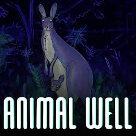

Klasikleşmiş Oyunlar
Neden Sürekli Eski Oyunlara Geri Dönüyoruz? Çıktığından beri yıllar
geçen fakat gene de geri dönüp tekrar oynadığımız oyunlar. Bu
oyunları klasikleştiren özelliklere bakalım.
Okumaya Devam Edin...

Bu Yılın En İyi Indie Oyunları!
Sizler için 2024'ün en iyi indie oyunlarını seçtik. Bu yıl çıkan
küçük çaplı eğlenceli oyunları sizin için derledik. En az birini
oynamak isteyeceksiniz.
Okumaya Devam Edin...
Hangi MMO Sizin İçin?
MMORPG'ler! Büyük oyuncu kitlesine sahip olan oyunlar. Yeni ve eski
bir çok MMO var. Peki hangisi sizin oyun stilinize uyuyor?
Okumaya Devam Edin...
Game Awards 2024! Peki Nasıl Geçti?
Game Awards 2024 ödülleri verildi ve etkinlik çok güzeldi. Bir çok
ödül verildi ve başka şeyler de oldu. Bakalım Game Awards 2024'de
neler olmuş...
Okumaya Devam Edin...
2025'de Çıkması En Çok Beklenen Oyunlar!
2025'de bizleri neler bekliyor? Yılın en beklenen oyunları neler?
Çıkması sabırsızlıkla beklenen oyunlar!
Okumaya Devam Edin...
Oyunlarda Aranması Gereken Özellik: Müzik!
Oyun oynarken genellikle mekaniklere, grafiklere veya hikayeye
bakarız, müziklere çok dikkat etmeyiz. İşte en iyi müziklere sahip
olan oyunlar!
Okumaya Devam Edin...